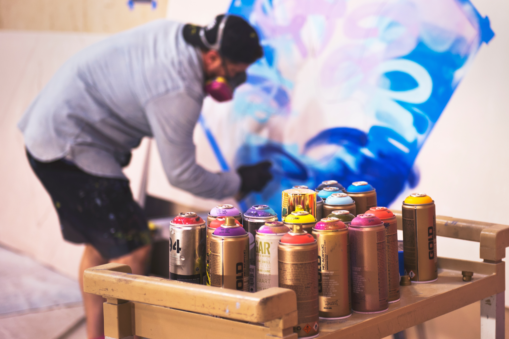

CLAAP :
En France et partout dans le monde, depuis quelques années, le
racisme est au coeur des débats. De plus en plus de mouvement
existent pour dénoncer ces faits et demander une égalité pour
tous.te.s. Nous voulions apporter notre pierre à l'édifice. C'est
pourquoi le projet CLAAP a vu le jour.
Nous sommes 7 jeunes étudiants, tous d'origines et de cultures
différentes. Aujourd'hui, ce projet nous tiens à coeur car il est le
fruit de 6 mois de travail intense, au quotidien afin de tenter de
mener à bien nos objectifs.
